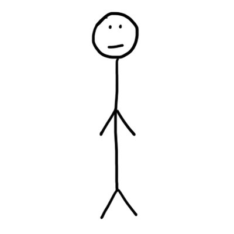

<style>
     .fixed-bottom {position: fixed;bottom: 0;width:100%;}
</style>
<footer style="background: #bfd7d9;clear:both;">
    <div class="text-center" style="font-weight: bold;font-size: 2em;">Copyright @ 2016 倩倩倩倩</div>
    <div class="text-center">
        <span style=" font-size: 1.5em; font-weight: bold;">求职方向:</span> PHP / 前端<br>
        <span style=" font-size: 1.5em; font-weight: bold;">工作地点:</span> 上海 / 深圳 / 杭州 / 成都 / 重庆
    </div>
    <div class="text-center">
        <span style=" font-size: 1.5em; font-weight: bold;">Email</span>:qqqian0819@gmail.com &nbsp;/ &nbsp;245013296@qq.com&nbsp;&nbsp;&nbsp;|&nbsp;&nbsp;&nbsp;
        <span style=" font-size: 1.5em; font-weight: bold;">QQ</span>:245013296&nbsp;&nbsp;&nbsp;|&nbsp;&nbsp;&nbsp;
        <span style=" font-size: 1.5em; font-weight: bold;">Tel</span>:18983425884</div>
    <div class="text-center">
        <a href="http://www.weibo.com/u/3314342403/home" target="_blank" style="font-size:3em;padding-top:1em;color: #000;" title ="新浪微博" >
        <i class="fa fa-weibo" ></i>
        </a>&nbsp;&nbsp;&nbsp;               
        <a href="https://github.com/qqqian0819" target="_blank"  style="font-size:3em;color: #000;" title="githu";>
            <i class="fa fa-github"></i>
        </a>&nbsp;&nbsp;&nbsp; 
        <a href="https://qinwq.dev.dxdc.net/qqqian0819/home.php" title="个人网站" target="_blank">
            
        </a>
    </div>
</footer>
<script src="../lib/bootstrap/js/jquery.min.js"></script>
<script src="../lib/bootstrap/js/bootstrap.min.js"></script>
<script type="text/javascript">
    //设置footer距离顶部的高度的高度
    $(function(){
    function footerPosition(){
        $("footer").removeClass("fixed-bottom");
        var contentHeight = document.body.scrollHeight,//网页正文全文高度
            winHeight = window.innerHeight;//可视窗口高度，不包括浏览器顶部工具栏
        if(!(contentHeight > winHeight)){
            //当网页正文高度小于可视窗口高度时，为footer添加类fixed-bottom
            $("footer").addClass("fixed-bottom");
        } else {
            $("footer").removeClass("fixed-bottom");
        }
    }
    footerPosition();
    $(window).resize(footerPosition);
});
</script>